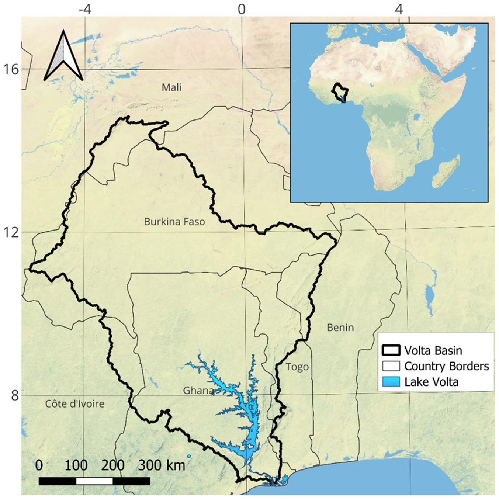
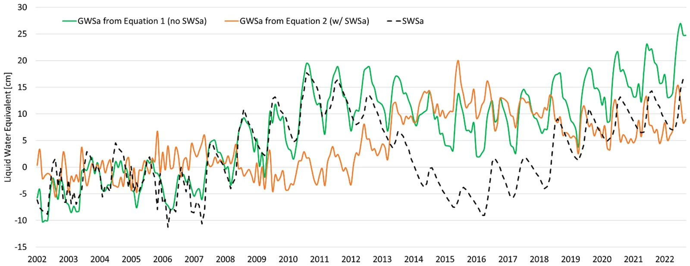
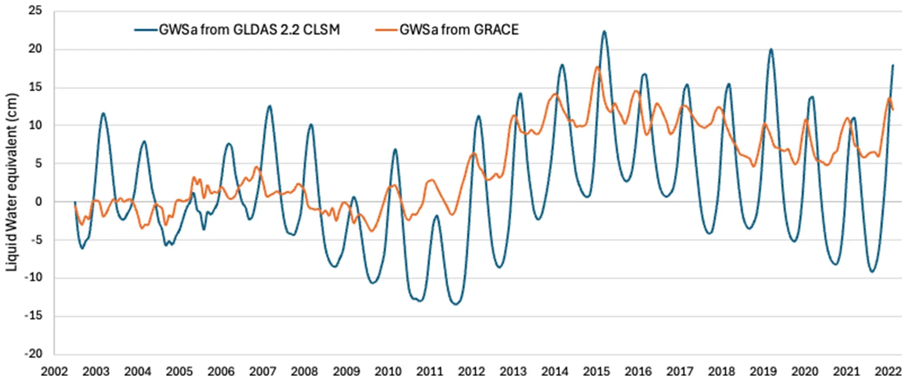
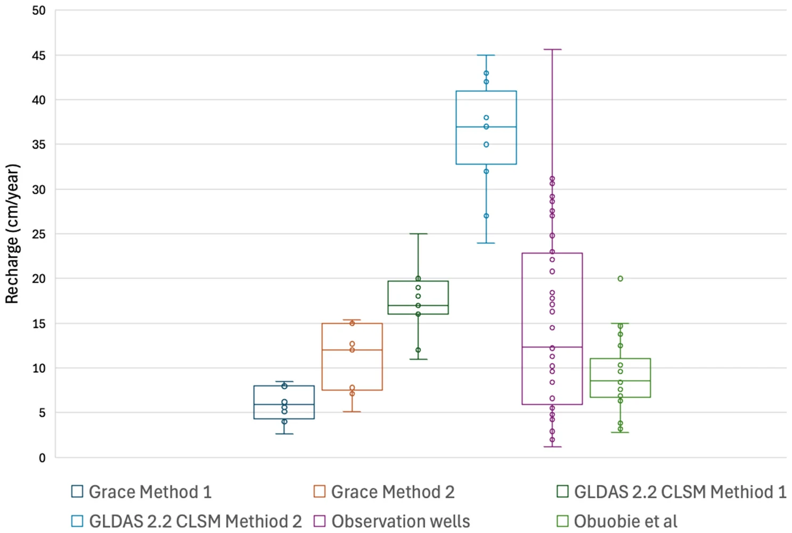

Bassin de la Volta : séparer un grand réservoir des eaux souterraines
Article
Barbosa, S. A., Jones, N. L., Williams, G. P., Teklu, H., Yidana, S. M., Pulla, S. T., Sanchez, J. L., Nelson, E. J., Ames, D. P., and Miller, A. W. (2025). A multi-source approach to groundwater storage and recharge assessment in the Volta Basin. Science of The Total Environment, 1001, 180421. doi:10.1016/j.scitotenv.2025.180421
Contexte et données
Le bassin de la Volta couvre environ 400 000 km² au Ghana, au Burkina Faso, au Togo, au Mali, en Côte d'Ivoire et au Bénin. Le lac Volta, en amont du barrage d'Akosombo, ne couvre qu'environ 2 % du bassin mais contient un volume d'eau important et variable.

Localisation du bassin de la Volta. Barbosa et al. (2025), Fig. 1, CC BY 4.0.
L'étude a utilisé la TWSa des mascons du JPL et l'ensemble GLDAS 2.1 d'avril 2002 à décembre 2022, soit le même bilan hydrique que l'application, en y ajoutant un terme d'eaux de surface, SWSa, calculé à partir de l'altimétrie Copernicus du lac Volta :
GWSa = TWSa − (SMa + SWEa + CANa + SWSa)
Les lacunes ont été comblées par décomposition saisonnière avec une tendance linéaire par morceaux, l'approche qu'utilise l'application (voir Le Modèle Saisonnier). L'étude a aussi comparé les résultats au stockage des eaux souterraines calculé directement par le modèle GLDAS 2.2 Catchment, aux précipitations CHIRPS et à 10 puits de surveillance du sous-bassin de la Nasia.
Pourquoi le lac compte
Le lac Volta représente environ la moitié de la variation totale du stockage d'eau du bassin. Sans le terme du lac, la GWSa calculée suit le lac : de 2002 à 2012, elle correspond presque entièrement à l'eau du lac. Une fois le lac retiré, le stockage des eaux souterraines a peu varié jusque vers 2012, puis a augmenté, pour un gain total d'environ 30 km³, soit environ 10 cm d'eau, sur 2002–2022.

Anomalie de stockage des eaux de surface (SWSa) calculée à partir des données d'altimétrie du lac Volta et anomalie de stockage des eaux souterraines (GWSa) obtenue avec et sans prise en compte de SWSa. Barbosa et al. (2025), Fig. 6, CC BY 4.0.
La GWSa de l'application pour ce bassin correspond à la courbe verte, car l'application ne soustrait pas les eaux de surface (voir Calcul du Stockage des Eaux Souterraines).
GLDAS 2.2, qui assimile GRACE, montre la même tendance mais des amplitudes saisonnières bien plus grandes ; les auteurs le recommandent donc pour les tendances mais pas pour les estimations de recharge.

Anomalie de stockage des eaux souterraines (GWSa) du bassin de la Volta dérivée du modèle GLDAS 2.2 CLSM. Barbosa et al. (2025), Fig. 7, CC BY 4.0.
Recharge
Appliquée à la GWSa GRACE pour 2010–2020 (les années antérieures à 2010 ne présentaient pas de cycle saisonnier net), la méthode de fluctuation de la nappe a donné une recharge moyenne de 5.8 cm/an (Method 1) et 10.7 cm/an (Method 2). Les puits du sous-bassin de la Nasia ont donné une médiane de 10.4 cm/an, pour un rendement spécifique supposé de 0.05, et une étude antérieure d'Obuobie et al. (2012) a donné 8.6 cm/an. GLDAS 2.2 a donné 17.4 et 36.1 cm/an, bien au-dessus des autres estimations.

Boîte à moustaches de la recharge dans le bassin de la Volta estimée par les WTF Methods 1 et 2 à partir des données GRACE, à partir du nouveau jeu de données GLDAS V2.2, par la WTF sur des données de puits d'observation, et d'après une étude antérieure d'Obuobie et al. (2012). Barbosa et al. (2025), Fig. 8, CC BY 4.0.
Conclusions
- Le stockage des eaux souterraines du bassin a augmenté d'environ 30 km³ sur 2002–2022, surtout après le début des années 2010.
- Dans un bassin comportant un grand réservoir, omettre les eaux de surface dans le bilan attribue les variations du réservoir aux eaux souterraines.
- La recharge issue de GRACE concorde avec les estimations fondées sur les puits et avec les études antérieures ; GRACE peut donc étayer des estimations de recharge là où la surveillance est clairsemée.
Pour les utilisateurs de l'application : avant d'interpréter la GWSa comme des eaux souterraines dans un bassin comportant un grand lac, un réservoir ou une zone humide, vérifiez quelle part du signal de stockage provient des eaux de surface, et retirez-la si elle est importante.
Pour reproduire cette analyse sur n'importe quelle région, réglez Gap filling sur Seasonal model et ouvrez l'Analyse de la Recharge.